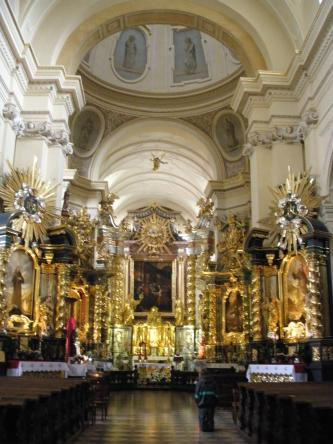
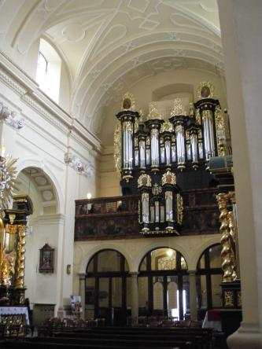
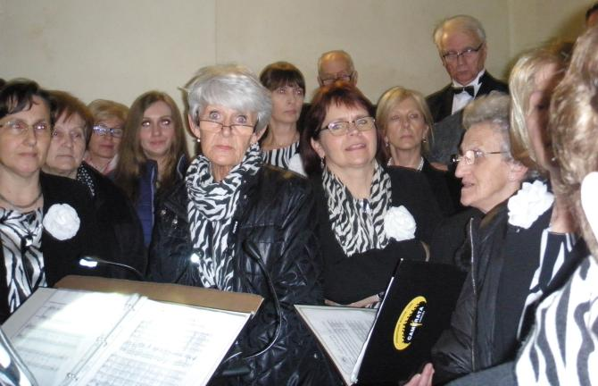
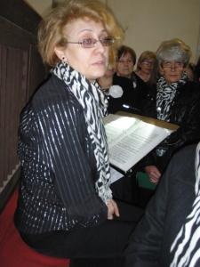
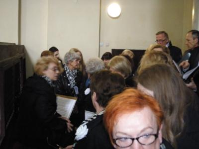
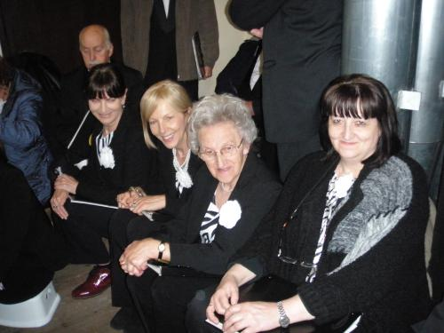
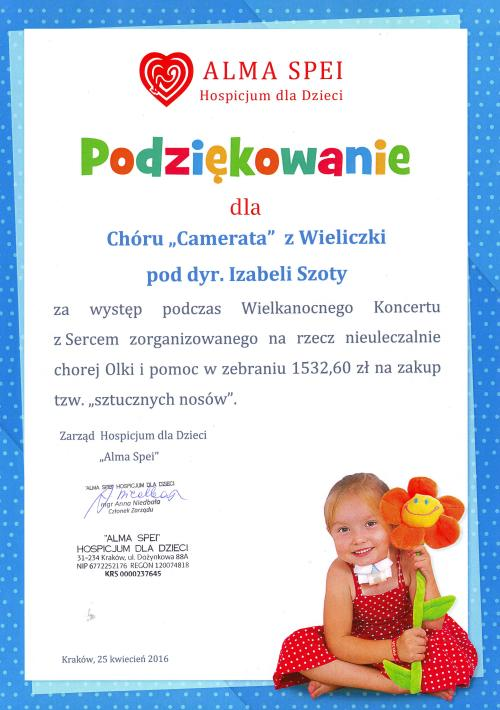

A tymczasem w Cameracie...
.
2016-04-24
Przejeżdżamy na koncert wcześniej, aby zrobić próbę z organami. Kościół pięknie odnowiony i olbrzymi. 
Wchodzimy na chór a tu niespodzianka… Na środku organy i nie ma miejsca dla chóru, bo chóru nie da się rozdzielić.

Trzeba coś wymyśleć, aby móc zaśpiewać. No cóż chór musi stać razem, więc musimy się „streścić”. Najważniejsze, to żeby pani dyrygent nam oczek nie popodbijała dyrygując, czyli dyrygenta „na półkę” a reszta się upchnie :)
 
Jest ciasno, ale ok. Damy radę. Niektórzy nawet znaleźli kawałek podłogi aby usiąść i odpocząć.

Koncert był trudny, bo śpiewaliśmy między innymi Cantatę J. S. Bacha, ale wyszedł super, co widać po naszych minach.Otrzymaliśmy za koncert wspaniałe podziękowanie.


© Stowarzyszenie Muzyczne Chór Camerata Wieliczka
Projekt i wykonanie:  Prowadzenie strony: Małgorzata Wysocka-Cebula
Prowadzenie strony: Małgorzata Wysocka-Cebula